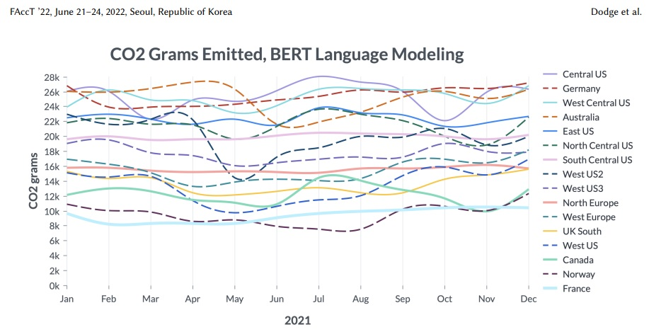

What does sustainable AI/ML look like? How to measure carbon emissions and at the same time how to reduce energy consumption? These questions became one of the hottest topics in recent times, due to multiple factors including all-time high energy prices, economic turmoil, and the echo of the COVID pandemic. Over the past few years, a growing number of papers highlighted the carbon emissions of machine learning (ML) workloads. While the standard software rarely provides this type of information for now, in the development area, we may already see some progress.
Let’s start with an explanation of the overall impact of training the machine learning model. In a “Measuring the Carbon Intensity of AI in Cloud Instances” [1] research paper, the authors provide a framework for measuring software carbon intensity and proposed to measure operational carbon emissions by using location-based and time-specific marginal emissions data per energy unit. They also showed the electricity consumption and CO2 emissions for a few classical tasks like NLP or Computer Vision.
How much does it cost to train a natural language model like BERT?
To train a BERT-small model for approximately 36 hours on 8 NVIDIA V100 GPUs, training run consumed over 37 kWh of electricity. Fine-tuning BERT-small on a standard natural language inference task for approximately 6 hours on 4 NVIDIA V100 GPUs consumed around 3.2 kWh of electricity.
But when it comes to something like a 6 billion parameter transformer, it took 8 days on 256 NVIDIA A100s. The total energy amounted to a staggering 13.8 MWh for only 13% of training. They estimated that the total energy consumption to train this model to completion would be approximately 103.5 MWh, or 103,500 kWh — almost 2800 times more than training the BERT-small model.

The authors also saw the difference in carbon emissions based on the region and time of the day. And the difference can be 7k grams vs. 26k grams, for the most efficient vs. least efficient regions.
Best practices
Based on that information, it’s obvious that we need to track and report the amount of emissions incurred by AI/ML, from the initial training phase to hyperparameters tuning and deployment stage.
In “The Carbon Footprint of Machine Learning Training Will Plateau, Then Shrink” [2] research paper, authors from Google and University of California, Berkeley proposed 4 best practices that that will reduce the impact in both manners, costs and carbon emissions:
-
Model. Selecting efficient AI/ML model architectures while advancing ML quality, such as sparse models versus dense modes, can reduce computation by factors of 5–10
-
Machine. Using processors optimized for ML training such as TPUs or recent GPUs (e.g., V100 or A100), versus general-purpose processors, can improve performance/Watt by factors of 2–5
-
Mechanization. Computing in the Cloud rather than on premise improves datacenter energy efficiency reducing energy costs by a factor of 1.4–2
-
Map. Moreover, Cloud computing lets AI/ML practitioners pick the location with the cleanest energy further reducing the gross carbon footprint by factors of 5–10
How to track CO2 emissions for ML model training
So how to quickly start tracking the energy consumption and equivalent CO2 emissions of the models in a straightforward way? Recently we found opensource package Eco2AI [3]
The Eco2AI is a python library for CO2 emission tracking. It monitors energy consumption of CPU & GPU devices and estimates equivalent carbon emissions taking into account the regional emission coefficient. The Eco2AI is applicable to all python scripts and all you need is to add the couple of strings to your code. All emissions data and information about your devices are recorded in a local file.
What we have under the hood?
GPU tracking. The Eco2AI library is able to detect NVIDIA devices. A Python interface for GPU management and monitoring functions was implemented within the Pynvml library. This is a wrapper for the NVIDIA Management Library which detects most of NVIDIA GPU devices and tracks the number of active devices, names, memory used, temperatures, power limits and power consumption of every detected device.
CPU tracking. The python modules os and psutil were used to monitor CPU energy consumption. To avoid overestimation, library takes into account the current process running in the system related only to model training. Thereby, the tracker takes percentage of CPU utilization and divides it by number of CPU cores, obtaining CPU utilization percent.
RAM tracking. Dynamic random access memory devices is important source of energy consumption in modern computing systems especially when significant amount data should be allocated or processed. However, accounting of RAM energy consumption is problematic as its power consumption is strongly depends if data is read, written or maintained. RAM power consumption is considered proportional to amount of allocated power by current running.
Emission intensity. Library includes permanently enriched and maintained database of emission intensity coefficients for 365 regions based on the public available data in 209 countries. Currently, this is the largest database among the trackers reviewed, which allows to enrich the higher precision of energy consumption estimations.
If you don’t want to spend too much time and need a quick calculations, there is online tool https://mlco2.github.io/impact/ based on “Quantifying the Carbon Emissions of Machine Learning” [4] paper that was published for the Climate Change AI workshop at NeurIPS 2019.
Few words on selecting the right approach for the downstream task
Just to avoid the paradox of choice, let’s consider that we need to implement AI/ML solution for a classification task. We may start thinking of utilizing something that is currently labeled as state-of-the-art, like GPT-3 or OPT175B. It can be a way much smaller model, but we can also consider the most efficient ML model architectures for a specific task.

Comparing training cost and average performance for T-Few 3B and SetFit (MPNet), with 8 labeled examples per class.
For instance, recent approach from HuggingFace, Intel Labs and the UKP Lab called SetFit: an efficient framework for few-shot fine-tuning of Sentence Transformers can achieve almost the same level of performance, or even outperforms some well-known LLMs.
By taking into consideration all the aspects covered here we can not only identify and optimize hidden costs of development but also move towards a more sustainable future.
[1] Jesse Dodge, Taylor Prewitt, Remi Tachet Des Combes, Erika Odmark, Roy Schwartz, Emma Strubell, Alexandra Sasha Luccioni, Noah A. Smith, Nicole DeCario, and Will Buchanan. 2022. Measuring the Carbon Intensity of AI in Cloud Instances. In 2022 ACM Conference on Fairness, Accountability, and Transparency (FAccT ’22), June 21–24, 2022, Seoul, Republic of Korea. ACM, New York, NY, USA. https://doi.org/10.1145/3531146.3533234
[2] The Carbon Footprint of Machine Learning Training Will Plateau, Then Shrink David Patterson, Joseph Gonzalez, Urs Hölzle, Quoc Le, Chen Liang, Lluis-Miquel Munguia, Daniel Rothchild, David So, Maud Texier, Jeff Dean. arXiv:2204.05149 [cs.LG]. https://doi.org/10.48550/arXiv.2204.05149
[3] Eco2AI: carbon emissions tracking of machine learning models as the first step towards sustainable AI Semen Budennyy, Vladimir Lazarev, Nikita Zakharenko, Alexey Korovin, Olga Plosskaya, Denis Dimitrov, Vladimir Arkhipkin, Ivan Oseledets, Ivan Barsola, Ilya Egorov, Aleksandra Kosterina, Leonid Zhukov https://doi.org/10.48550/arXiv.2208.00406 https://github.com/sb-ai-lab/Eco2AI
[4] Quantifying the Carbon Emissions of Machine Learning. Alexandre Lacoste, Alexandra Luccioni, Victor Schmidt, Thomas Dandres https://doi.org/10.48550/arXiv.1910.09700